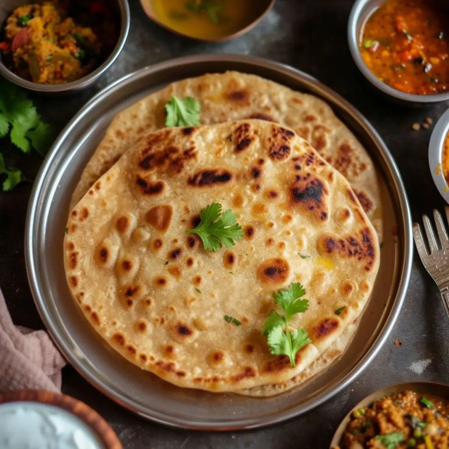

Sattu Paratha Recipe
Sattu Paratha is a delicious and nutritious flatbread made with sattu (roasted chickpea flour) and spices, popular in North India, especially in Bihar and Uttar Pradesh. It’s a wholesome meal, perfect for breakfast or lunch.
Ingredients:
For the Dough:
- 2 cups whole wheat flour (atta)
- Water (as needed, for kneading)
- Salt to taste
- 1 tbsp oil (optional)
For the Filling:
- 1 cup sattu (roasted chickpea flour)
- 1 medium onion, finely chopped
- 2-3 green chilies, finely chopped (adjust to taste)
- 1-2 tbsp fresh coriander leaves, chopped
- 1/2 tsp ajwain (carom seeds) (optional)
- 1/2 tsp cumin powder
- 1/2 tsp red chili powder (adjust to taste)
- 1 tbsp mustard oil (or any cooking oil)
- Salt to taste
- Water (if needed, to adjust the filling consistency)
Instructions:
1. Prepare the Dough:
- In a mixing bowl, combine whole wheat flour and salt.
- Add water gradually and knead to form a soft and pliable dough. If desired, add 1 tablespoon of oil to the dough.
- Cover the dough with a damp cloth and let it rest for about 20-30 minutes.
2. Prepare the Filling:
- In another bowl, mix the sattu, chopped onions, green chilies, coriander leaves, ajwain (if using), cumin powder, red chili powder, mustard oil, and salt.
- Mix well until all ingredients are combined. If the filling looks too dry, you can add a little water to make it easier to handle, but be cautious not to make it too wet.
3. Stuff the Parathas:
- Divide the dough into equal-sized balls (about the size of a golf ball).
- Take one dough ball and flatten it slightly with your fingers. Use a rolling pin to roll it into a small disc (about 4-5 inches in diameter).
- Place 1-2 tablespoons of the sattu filling in the center of the disc.
- Bring the edges of the disc together to seal the filling inside. Pinch and twist to secure it, then flatten it gently.
- Roll it out again carefully into a paratha, ensuring the filling doesn't spill out.
4. Cook the Parathas:
- Heat a tava or skillet over medium heat. Once hot, place the rolled-out paratha on it.
- Cook for about 1-2 minutes until small bubbles start to appear. Flip the paratha.
- Apply a little ghee or oil on the cooked side and press gently with a spatula. Flip again and apply ghee or oil on the other side.
- Cook until both sides are golden brown and crisp, about 2-3 minutes total.
- Remove from the skillet and keep warm in a covered container. Repeat the process for the remaining dough balls.
5. Serve:
Serve the hot sattu parathas with yogurt, pickle, or chutney of your choice.
Enjoy your nutritious and flavorful sattu parathas!